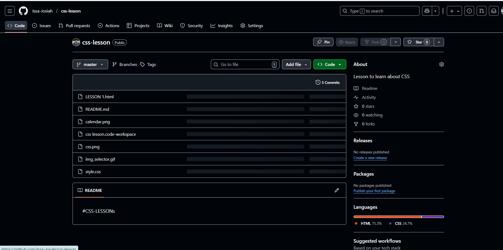
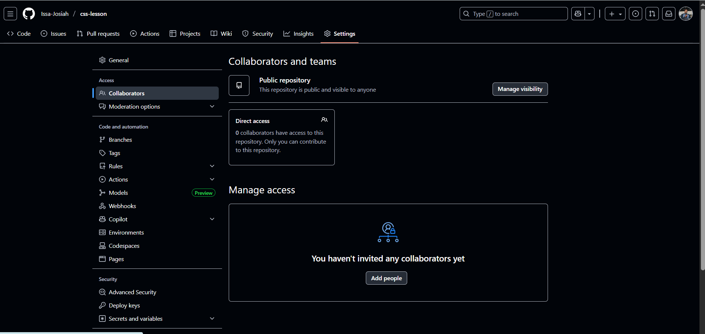
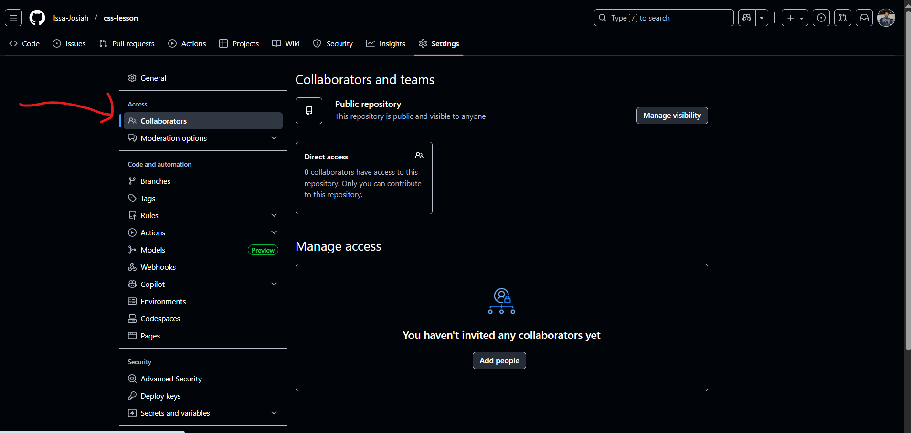
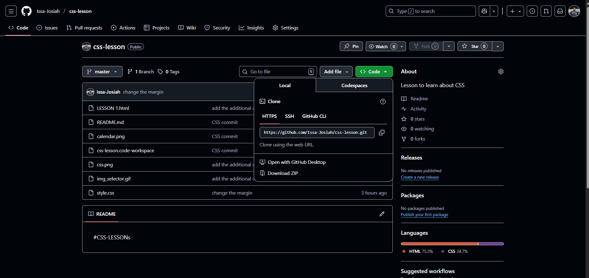
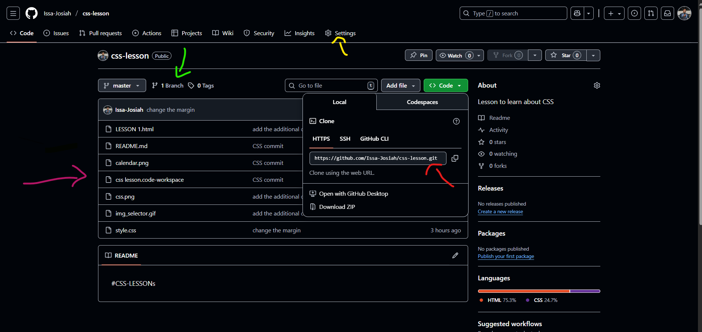
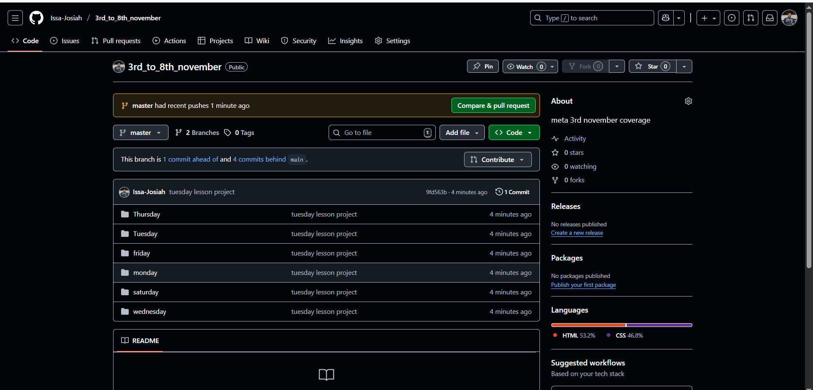
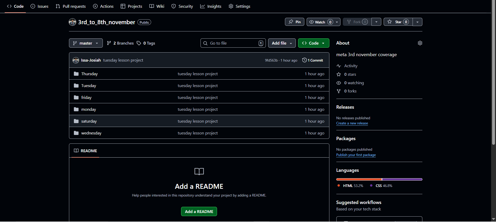
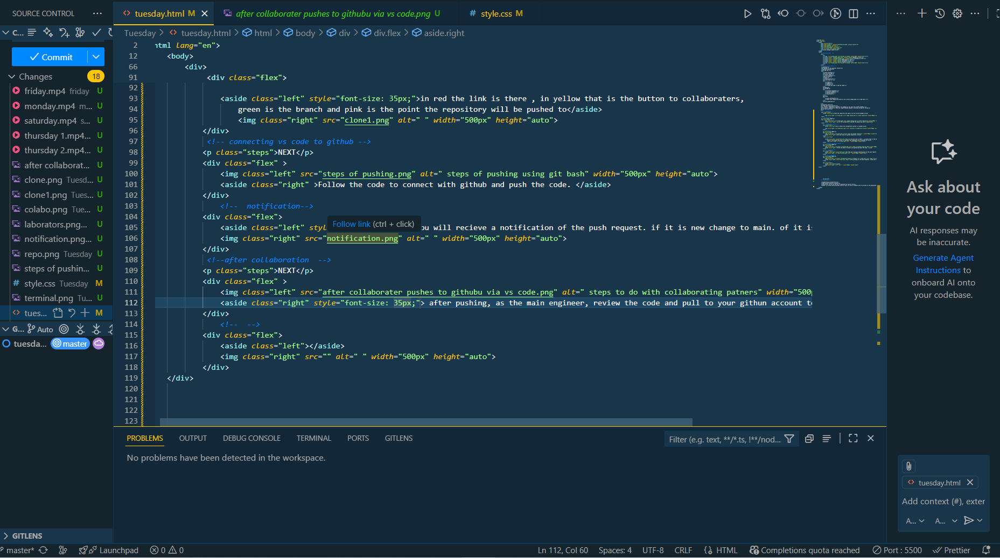

github
reminder of the previous lesson
github function
we had the
- local machine
we use the IDE
- source code
- local machines
We use Git
- web
- cloud platform
we are able to
- read
- update
- delete
- create new code or add new code
collaboratos
include
- software engineer
- project managers
- devop teams
- security
log usage
- top contributers
- data time change and attach an id to every change made on th code base.
ci/cd pipelines
practical part
steps and visualisation
1. create a repository in github. for example in our case 3rd to 8th november.
The project comprises of what was taught between monday to saturday during the review
so lets start

NEXT


NEXT


NEXT


NEXT


NEXT

NEXT

abootstrap introduction
CDN content delivery network
bootstrap. we can use the cdn or download the source file
defer is written while putting script on top. its work it enables work to be done in the background as other processes continue.
DOWNLOAD AND WATCH THE VIDEO TO VISUALISE WHAT HAS BEEN DONE
VIDEO RECORDING